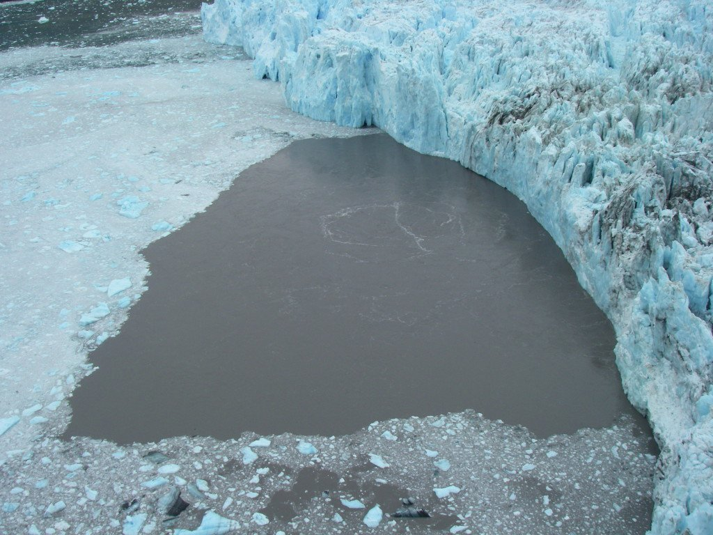

A new study, published August 10 in Geophysical Research Letters, demonstrates how seismic tremor can be used to track variations in the flow of water emerging from the termini of marine-terminating glaciers. This tremor, sometimes referred to as “seismic noise,” is recorded on seismometers, common earthquake monitoring instruments. Measurements of subglacial discharge variation at tidewater glaciers, which thus far have not been achieved, are a critical step towards understanding the present and future behavior of some of the largest and most rapidly-changing glaciers on earth–those that end in the ocean. Not only does subglacial water control fast glacier flow, but subglacial water discharged into fjords promotes glacier melt below sea level and can erode and redeposit glacier-stabilizing sediment at glacier fronts. These newly-reported observations of glaciohydraulic tremor open a broad new avenue through which to study these important phenomena. The study was authored by Tim Bartholomaus, Jason Amundson, Jake Walter, Shad O'Neel, Mike West and Chris Larsen.
This study has been reported on the radio by the Austin, TX, NPR affiliate, and by EOS, the American Geophysical Union's news publication. Additional coverage includes the Aug. 31 issue of the magazine Engineering News Record, as well as several websites, including, grist.org, futurity.org, phys.org, and Environmental Monitor.
You can read the UT press release about our study here.

